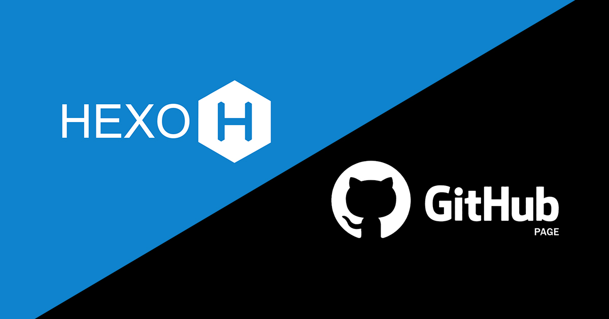
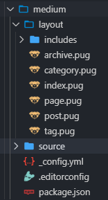
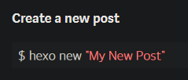
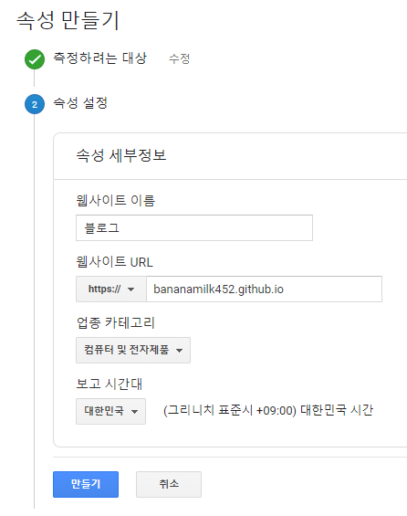

블로그를 알아보다
평소에 개발에만 집중하느라 그 개발에 대해 기록하는 일에는 신경쓰지 않았다. 그러다가 트위터 타임라인에 지나가는 개발자들의 블로그, 포트폴리오들을 보면서 나도 내 개발 일지를 기록해야겠다고 생각했다.
처음에는 Medium이라는 해외 블로그 사이트에 관심이 갔지만, 자기 마음대로 커스터마이징하거나 수익 창출이 제한적인 이유때문에 다른 플랫폼을 알아보다가 Hexo를 찾게 되었다.
Hexo의 장점과 단점, 그리고 차선책
Hexo는 자유로운 커스터마이징이라는 막강한 장점을 가지고있지만, 자체적으로 호스팅을 해야함과, 자기가 프로그래밍을 할 줄 알아야하는 단점이 있다. 서버리스를 좋아하는 필자에게는 호스팅이 필요함은 꽤나 큰 단점이었다.
하지만 Github Page라는 Github의 정적 사이트 호스팅과, 이번에 새로 생긴 Github Action이라는 자체적인 CI를 통해 블로그 글 업로드를 자동화 할 수 있게 되었다. 오늘은 Medium을 대신한 Hexo 블로그 개발기로 시작하겠다.
Hexo 시작하기
Hexo를 시작하기는 정말로 간단하다. 모듈 설치 후, 폴더 initializing만 해주면 된다.
npm install hexo-cli -g
hexo init blog
cd blog
npm install
hexo server위의 명령어를 실행하면 localhost:4000에 예제 블로그가 나오게된다. 이것만으로도 벌써 충분한 블로그가 완성되었다.
Hexo에서 글 쓰고 빌드하기
hexo new post "글 제목"위 커맨드를 입력하면 글 제목에 맞는 마크다운 초안을 source > _posts 폴더에 생성해준다. 마크다운 문법에 맞게 글을 쓰면 자동으로 테마에 맞게 렌더링하여 글을 생성해준다.
hexo generatehexo generate는 Hexo가 글과 페이지를 렌더링해 정적 사이트로 만들어준다. 이렇게 빌드된 사이트는 public 폴더에 저장된다. 이 파일들이 블로그가 되는 것이다.
Hexo 커스터마이징
Hexo는 자체적인 테마 사이트를 운영하고 있다. 이 사이트에서도 충분히 테마를 다운 받아서 설치 할 수 있다. 하지만 필자는 Medium 풍의 블로그가 너무나도 좋았기 때문에 Medium식 테마를 만들게 되었다.
하지만 그래도 맨땅에서 테마를 만들기는 아직 너무 어렵고 힘들기 때문에. generator-hexo-theme을 사용하게 되었다. 이 패키지는 기본적인 테마를 원하는 패키지를 사용해 만들 수 있게 만들어준다!
지원하는 템플릿
- ejs
- nunjucks
- pug
- swig
지원하는 스타일
- stylus
- sass
- scss
- less
- css
이 패키지는 yo라는 디펜던시 추가 설치가 필요하다.
npm install --global yo
npm install --global generator-hexo-theme필자는 템플릿은 pug, 스타일은 주로 Pure CSS나 SCSS를 쓰는 편이기 때문에 pug + SCSS를 사용하게 되었다.
generator-hexo-theme을 사용하여 테마를 생성하면 아래처럼 나오게 된다.

자동 생성된 파일을 자신에게 맞게 수정하면 테마를 쉽게 만들 수 있다.
Hexo 테마 각종 설정
폰트 불러오기
하지만 generator로 생성한 테마는 아예 날 것 그 자체이므로 폰트부터 불러와줄 필요가 있다. 필자는 Google Web Fonts에서 Lato와 Noto Sans KR을 가져왔다.
<link href="https://fonts.googleapis.com/css?family=Lato|Noto+Sans+KR&display=swap" rel="stylesheet"> layout.pug에서 head 부분 밑에 삽입해주면 Lato와 Noto Sans KR을 사용할 수 있다. 물론 font-family 설정은 필수이다.
body {
font-family: Lato, 'Noto Sans KR', -apple-system, BlinkMacSystemFont, "Segoe UI", Roboto, Oxygen, Ubuntu, Cantarell, "Open Sans", "Helvetica Neue", sans-serif;
}거의 모든 시스템에서 알맞는 폰트를 표시해주는 스타일이다. 애용하도록 하자.
코드 하이라이팅
post 보기까지 만들다보니 코드 하이라이팅이 보기에 별로여서 주로 사용하는 highlight.js를 사용하게 되었다.
<link rel="stylesheet"
href="//cdnjs.cloudflare.com/ajax/libs/highlight.js/9.18.1/styles/default.min.css">
<script src="//cdnjs.cloudflare.com/ajax/libs/highlight.js/9.18.1/highlight.min.js"></script>이 코드들도 head 밑에 넣어주고 _config.yml 파일을 수정해주면 완벽하게 적용된다
highlight:
enable: false
line_number: true
auto_detect: false
tab_replace: ''
wrap: true
hljs: true전보다 코드 하이라이팅이 더 예뻐진 모습을 볼 수 있다.

구글 애널리틱스 추가
가끔은 내 사이트에 사용자가 얼마나 많이 오는지, 무슨 페이지에 자주 오는지를 확인하고 싶을때가 있다. 그때를 위한 스크립트다.
구글 애널리틱스는 이런 추적을 쉽게 해주는 스크립트이다. 왼쪽 아래의 관리 버튼을 누르고 속성 추가를 하면 아래처럼 사이트를 추가할 수 있다.

그 후 추적 코드를 복사하여 head 밑에 삽입해주면 완벽하게 작동한다! 사용자가 원하는 컨텐츠가 무엇인지 알아보자!
<!-- Global site tag (gtag.js) - Google Analytics -->
<script async src="https://www.googletagmanager.com/gtag/js?id=UA-137689389-3"></script>
<script>
window.dataLayer = window.dataLayer || [];
function gtag(){dataLayer.push(arguments);}
gtag('js', new Date());
gtag('config', 'UA-137689389-3');
</script>구글 검색엔진에 추가
구글에도 내 블로그가 상위에 올라가서 검색량이 많아지면 기분도 더 좋아진다.
Google Search Console을 이용해 검색결과를 구글에 나오게 해보자!